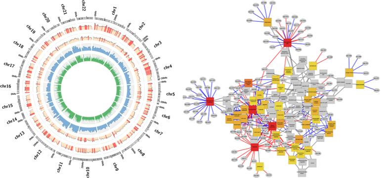
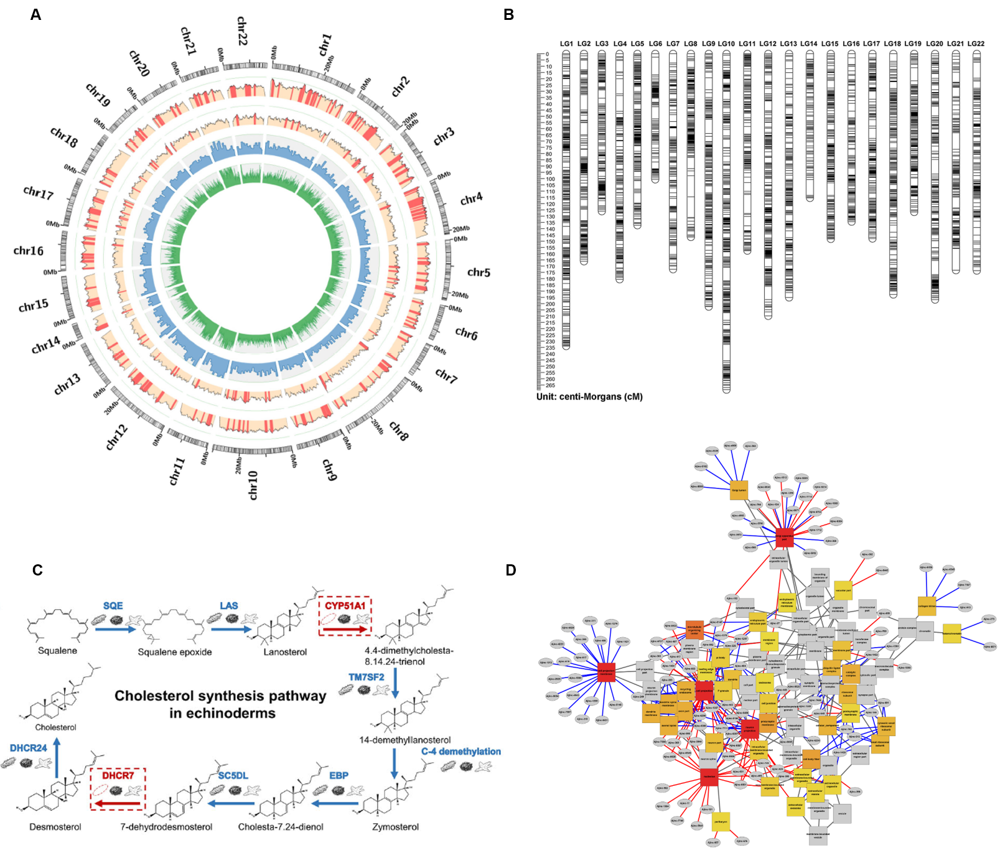

Project Overview
 In this project, my research mainly focusing on two aspects. 1) I lead the construction of the first high-density genetic linkage map, whole genome assembly and annotation for echinoderms in a sea cucumber species using the whole genome sequencing and 2b-RAD-Seq technique. And 2) I analyzed transcriptome data from two echinoderm species and identified nearly 17,000 long-noncoding RNA (lncRNA). I then connected the lncRNA, mRNA and miRNA as the lncRNA-microRNA-gene trinities to construct the first coding-noncoding network in echinoderm.
Representative publication
- Yuli Li*, Ruijia Wang*, Xiaogang Xun, Jing Wang, Lisui Bao, Ramesha Thimmappa, Jun Ding, Jingwei Jiang, Liheng Zhang, Tianqi Li, Jia Lv, Chuang Mu, Xiaoli Hu, Lingling Zhang, Jing Liu, Yuqiang Li, Lijie Yao, Wenqian Jiao, Yangfan Wang, Shanshan Lian, Zelong Zhao, Yaoyao Zhan, Xiaoting Huang, Huan Liao, Jia Wang, Hongzhen Sun, Xue Mi, Yu Xia, Qiang Xing, Wei Lu, Anne Osbourn, Zunchun Zhou, Yaqing Chang, Zhenmin Bao, Shi Wang: Sea cucumber genome provides insights into saponin biosynthesis and aestivation regulation. Cell discovery 4.1 (2018): 29.
- Chuang Mu*, Ruijia Wang*, Tianqi Li*, Yuqiang Li, Meilin Tian, Wenqian Jiao, Xiaoting Huang, Lingling Zhang, Xiaoli Hu, Shi Wang, Zhenmin Bao: Long non-coding RNAs (lncRNAs) in sea cucumber: The large- scale identification, expression profiling, coding-non-coding network construction. Marine biotechnology 18.4 (2016): 485-499.
- Meilin Tian, Yangping Li, Jing Jing, Chuang Mu, Huixia Du, Jinzhuang Dou, Junxia Mao, Xue Li, Wenqian Jiao, Yangfan Wang, Xiaoli Hu, Shi Wang, Ruijia Wang, Zhenmin Bao: Construction of a High-Density Genetic Map and Quantitative Trait Locus Mapping in the Sea Cucumber Apostichopus japonicus. Scientific Reports 5 (2015), 14852, doi:10.1038/srep14852.
Gallery

Figure. Genomic resource of Sea Cucumber.
(A) Genome landscape and polymorphism analysis of the sea cucumber Apostichopus japonicus. From outer to inner circles: I, marker
distribution on 22 chromosomes at the Mb scale; II and III, single nucleotide polymorphism (SNP) density across genome (II) or CDS (III) drawn in 1-
Mb sliding windows with a 50-kb step (yellow columns), and polymorphism hotspot regions (p = 1e–4) are colored red; IV and V, gene density and
repeat density across the genome, respectively, drawn in 1-Mb non-overlapping windows.
(B) The high-density consensus linkage map of Sea Cucumber (A. japonicus).
The consensus map which contained 7839 markers in 22 linkage groups was constructed through combing the male and female linkage maps
(C) Gene representation of the canonical animal cholesterol
synthesis pathway in the sea cucumber genome. The sea cucumber lacks two genes, Cyp51 and Dhcr7, suggesting that it might have lost its de novo
cholesterol synthesis ability, consistent with the previous observation of extremely low cholesterol content in sea cucumber.
(D) The coding-non-coding enrichment network corresponding to the ontologies of molecular function and cellular component for Sea Cucumber (A. japonicus).
Author: Ruijia Wang